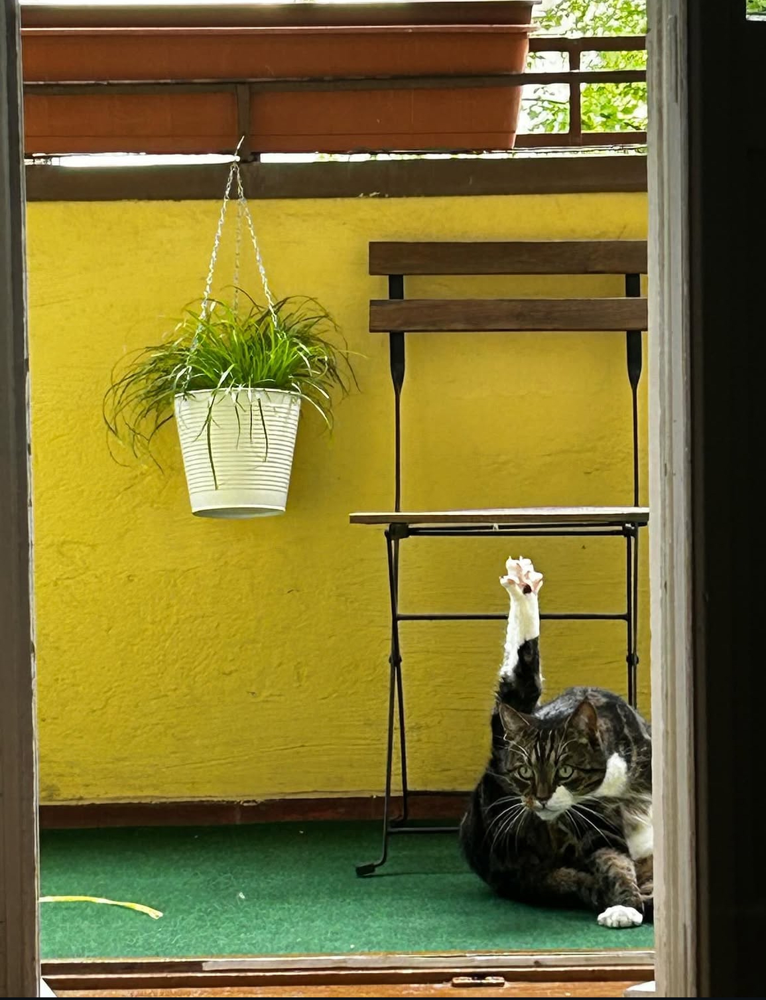

Murki´s Website
Willkommen auf meiner kleinen Seite über meinen Kater Milo 🐾 Er ist mein bester Freund, ein echter Abenteurer und ein bisschen faul – aber immer liebenswert. Hier findest du ein paar Infos über ihn, seine Lieblingsmomente und tolle Fotos aus seinem Katzenleben.

💤Hier schläft er nach einem anstrengenden Tag voller Abenteuer.

Mukri schäft auf dem Tisch
🪴 Zwischen den Blumentöpfen und Sonnenschatten – hier ist Milo in seinem Element.